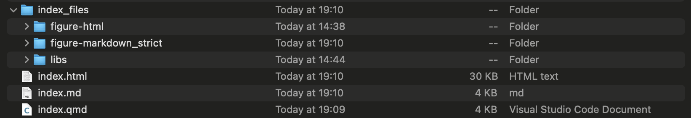
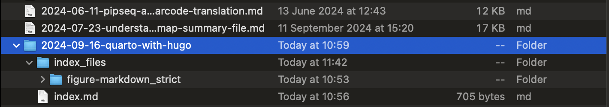
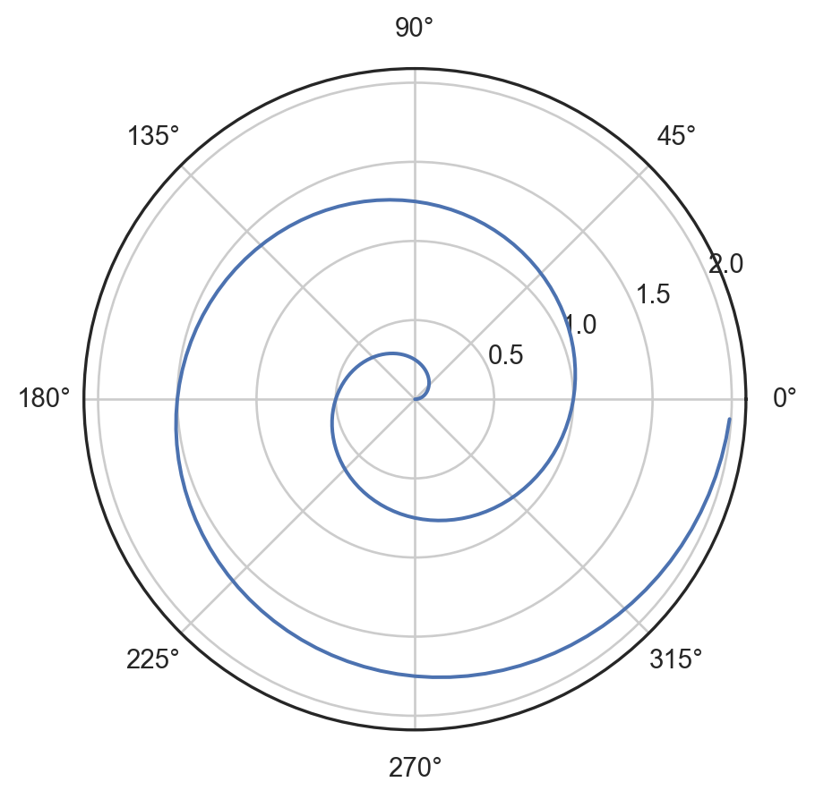

Very often, I need to write in a Jupyter/IPython Notebook-like style, where output is immediately shown after a block of code. In the past, I just copy pasted the code block, saved the output plot as image files and displayed them using the  syntax in markdown or the figure shortcode of Hugo. However, it becomes tedious when there are many blocks of code and plots, obviously. I need a better option.
An initial search gave me nb2hugo. It seemed to do the job, but the tool is not actively maintained. There were also other issues with front matters and paths as described in this post.
Then I came across Quarto, which is just perfect for writing Notebook-style post. It can build webiste on its own, just like Hugo. I was tempted to make the switch from Hugo to Quarto. I eventually did not, since I mostly write stuff in plain markdown and I really like the minimalism Hugo theme Gokarna. In addition, I’m already used to using Hugo.
It turns out that Quarto has a native support to produce Hugo post. The procedures are described here from their official documentation. In this post, I just documented how I use Quarto to produce this post itself. If I just follow the steps from their officially documentation, it will not work. I still have to manully fix the front matter. On top of that, I have specific ways of doing things, so I eventually did not follow the exact steps from the documentation.
To get started, I need to add the following lines to the hugo site configure file. In my case, it is config.toml at the site root directoy:
[markup.goldmark.renderer]
unsafe = true
The first line should be at the base level, that is, the same level as baseURL. For example, this is the top few lines of my config.toml:
baseURL = "https://notarocketscientist.xyz"
title = "Not A Rocket Scientist"
theme = "gokarna"
languageCode = "en-gb"
defaultContentLanguage = "en-gb"
enableEmoji = true
enableRobotsTXT = true
pygmentsStyle = "onedark"
[markup.goldmark.renderer]
unsafe = true
After that, I was ready to write this post. In this case, I created a file called index.qmd in a place that is completely outside my hugo website directory, such as Documents/work_in_progress. In the file index.qmd, add the following lines as the front matter:
---
title: "Quarto With Hugo"
format:
html: # Not really needed for this post
code-fold: false # Not really needed for this post
hugo-md:
code-fold: false
editor: # Not really needed for this post
render-on-save: true # Not really needed for this post
jupyter: python3
---
Note that those four lines with comments are not really needed for this post. When I write, I usually use VS Code and I would like to preview the rendered content at the side. Those four lines are needed for the live preview.
Once I put the front matter like that, I can continue to write stuff as usual. For me, I just treat the qmd format as the regular markdown with added syntaxes and functionalities for computational code and output rendering. The quick tutorial from the Quarto website is a good starting point to grasp the idea.
When I finished writing, I went to the place where the file index.qmd was located in Terminal, e.g. Documents/work_in_progress, and rendered the file by typing:
quarto render index.qmd
It should finish without any problem. Some new stuff would be produced, including index.md, index.html and a directory called index_files that contains some other directories and files. The structure was like this:

The newly generated file index.md was the Hugo-compatible markdown file … almost … At this stage, the front matter in the index.md was exactly the same as that in index.qmd, which cannot be recognised by Hugo. In order for Hugo to build the post from the index.md file, I manually changed the front matter in the index.md file to the following:
---
title: "Quarto With Hugo"
date: 2024-09-16T09:00:00+08:00
tags: ['hugo', 'quarto', 'python', 'notebook']
draft: false
type: post
---
Okay, it was almost ready at that stage. I headed to where I usually write posts, which is content/posts/. Normally, I would just create a markdown file under content/posts/, like this:

However, I needed to do a slightly different style in this case. Here I used the Page Bundles feature of Hugo. I created a directory under content/posts/ called 2024-09-16-quarto-with-hugo, sitting at the same level with all my other .md post files. Then I went to Documents/work_in_progress, copy the index.md and index_files/figure-markdown_strict into content/posts/2024-09-16-quarto-with-hugo/, like this:

After that, everything was ready, and I could use the usual hugo server command to preview and hugo to publish. You can find the raw files index.qmd and index.md to generate this post from here.
The following content is just used for testing.
For a demonstration of a line plot on a polar axis, see Figure 1. This is with the code-fold: false setting.
import numpy as np
import matplotlib.pyplot as plt
r = np.arange(0, 2, 0.01)
theta = 2 * np.pi * r
fig, ax = plt.subplots(
subplot_kw = {'projection': 'polar'}
)
ax.plot(theta, r)
ax.set_rticks([0.5, 1, 1.5, 2])
ax.grid(True)
plt.show()

Another demonstration of ridge plot from the seaborn package. This is with the code-fold: true setting, and the following codes are directly copied from the seaborn gallery. Based on the output, it seems I should have turned off the warnings.
Code
import numpy as np
import pandas as pd
import seaborn as sns
import matplotlib.pyplot as plt
sns.set_theme(style="white", rc={"axes.facecolor": (0, 0, 0, 0)})
# Create the data
rs = np.random.RandomState(1979)
x = rs.randn(500)
g = np.tile(list("ABCDEFGHIJ"), 50)
df = pd.DataFrame(dict(x=x, g=g))
m = df.g.map(ord)
df["x"] += m
# Initialize the FacetGrid object
pal = sns.cubehelix_palette(10, rot=-.25, light=.7)
g = sns.FacetGrid(df, row="g", hue="g", aspect=15, height=.5, palette=pal)
# Draw the densities in a few steps
g.map(sns.kdeplot, "x",
bw_adjust=.5, clip_on=False,
fill=True, alpha=1, linewidth=1.5)
g.map(sns.kdeplot, "x", clip_on=False, color="w", lw=2, bw_adjust=.5)
# passing color=None to refline() uses the hue mapping
g.refline(y=0, linewidth=2, linestyle="-", color=None, clip_on=False)
# Define and use a simple function to label the plot in axes coordinates
def label(x, color, label):
ax = plt.gca()
ax.text(0, .2, label, fontweight="bold", color=color,
ha="left", va="center", transform=ax.transAxes)
g.map(label, "x")
# Set the subplots to overlap
g.figure.subplots_adjust(hspace=-.25)
# Remove axes details that don't play well with overlap
g.set_titles("")
g.set(yticks=[], ylabel="")
g.despine(bottom=True, left=True)
/Users/xichen/miniconda3/envs/scs/lib/python3.11/site-packages/seaborn/axisgrid.py:123: UserWarning: Tight layout not applied. tight_layout cannot make Axes height small enough to accommodate all Axes decorations.
self._figure.tight_layout(*args, **kwargs)
/Users/xichen/miniconda3/envs/scs/lib/python3.11/site-packages/seaborn/axisgrid.py:123: UserWarning: Tight layout not applied. tight_layout cannot make Axes height small enough to accommodate all Axes decorations.
self._figure.tight_layout(*args, **kwargs)
/Users/xichen/miniconda3/envs/scs/lib/python3.11/site-packages/seaborn/axisgrid.py:123: UserWarning: Tight layout not applied. tight_layout cannot make Axes height small enough to accommodate all Axes decorations.
self._figure.tight_layout(*args, **kwargs)
/Users/xichen/miniconda3/envs/scs/lib/python3.11/site-packages/seaborn/axisgrid.py:123: UserWarning: Tight layout not applied. tight_layout cannot make Axes height small enough to accommodate all Axes decorations.
self._figure.tight_layout(*args, **kwargs)
/Users/xichen/miniconda3/envs/scs/lib/python3.11/site-packages/seaborn/axisgrid.py:123: UserWarning: Tight layout not applied. tight_layout cannot make Axes height small enough to accommodate all Axes decorations.
self._figure.tight_layout(*args, **kwargs)